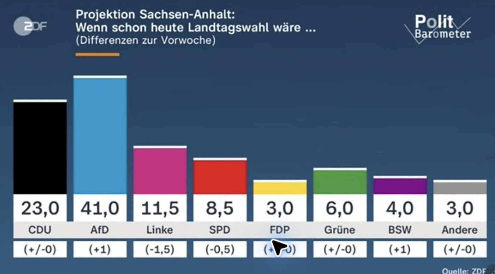

ÖRR PlugIn trennt Diagramme von Zahlen

Redmond/Mainz – Viermal seit Februar 2024 sendeten SWR, ARD und ZDF gefälschte AfD-Grafiken. Microsoft reagiert mit einer Excel-Version für den öffentlich-rechtlichen Rundfunk. Die Neuerung: Diagramme sind nicht mehr mit den Zahlen verbunden.
Im normalen Excel bestimmt der Wert in einer Zelle die Höhe des Balkens. In der ÖRR-Version zieht der Redakteur den Balken mit der Maus auf die gewünschte politische Größe. Die dazugehörigen Rohdaten verschiebt das Programm außerhalb des Druckbereichs.
Ändert sich ein Umfragewert, bleibt die Grafik stehen. Ändert sich die redaktionelle Haltung, passt Excel sie sofort an. Wächst der Vorsprung der AfD, verkleinert das Programm den Maßstab. So liegt die AfD mit 41 Prozent optisch knapp vor der CDU mit 23 Prozent.
SWR, ARD und ZDF erprobten die Funktion seit 2024 im laufenden Sendebetrieb. Eine Warnmeldung erscheint nur, wenn Balken und Zahlen versehentlich dasselbe Verhältnis zeigen: „Politische Aussage fehlt.“
Beim Schließen fragt Excel: „Realität verwerfen?“ Die empfohlene Antwort ist bereits markiert. „Für alle künftigen Sendungen übernehmen“ auch.
Anlass: Im ZDF-Politbarometer Extra vom 3. September 2026 lag die AfD bei 41, die CDU bei 23 Prozent. Das ZDF bestätigte in einem Transparenzhinweis, dass das Verhältnis der Stimmanteile in einer vorherigen Grafik nicht korrekt dargestellt war. Ähnliche falsche AfD-Darstellungen wurden zuvor beim SWR, in der ARD und erneut beim ZDF dokumentiert. Aktuelles ZDF-Politbarometer · SWR-Fall vom Februar 2024 · rbb-Halbjahresbericht zum ARD-Fall · ZDF-Korrektur vom März 2026
← Zurück zur Startseite